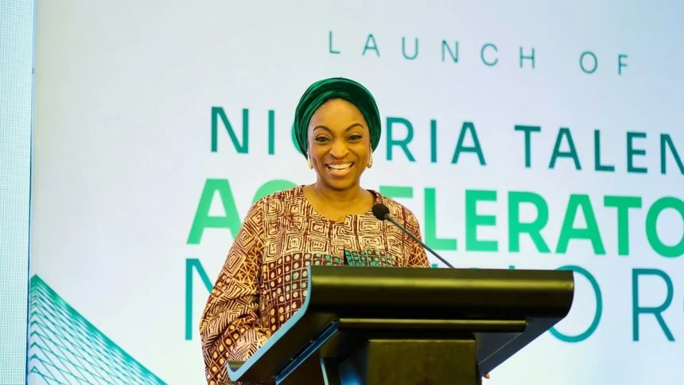

Portfolio investments provide liquidity, pave way for deeper foreign capital – Oduwole

Portfolio investments can provide liquidity to Nigeria’s economy and help attract deeper, longer-term foreign capital, Industry, Trade and Investment Minister Jumoke Oduwole said. She described portfolio inflows as a way for investors to assess the Nigerian market before considering larger commitments in other sectors, arguing that their role is often underappreciated.
Oduwole said the government is promoting opportunities in the creative economy, environment, agribusiness and climate financing to attract international partnerships. She clarified that the $500 million associated with the Algiers engagement referred to business connections and potential partnerships between Nigerian private-sector companies and international investors. It was separate from the wider economic benefits of hosting investment events, she said, and should be viewed as a baseline for opportunities being pursued.
She also said investment announcements connected to President Bola Tinubu’s foreign trips had reached $50 billion as of 2025. These included about $8 billion in staged fertiliser investments and plans involving roughly $1.5 billion from Coca-Cola. Oduwole said the priority was to ensure announcements become actual investments.
Central Bank of Nigeria data showed portfolio inflows rose 45% to $6.51 billion in the second quarter of 2026, from $4.49 billion in the previous quarter. Such inflows reflect foreign participation in financial markets but are generally more exposed to changing market conditions than longer-term direct investment. The government has also outlined a wider investment pipeline: in October 2026, it unveiled 65 projects requiring a combined $78.5 billion. A Nigeria Deal Room, announced in June 2026, is intended to help turn opportunities into bankable transactions and address regulatory obstacles to implementation.
Source: Nairametrics